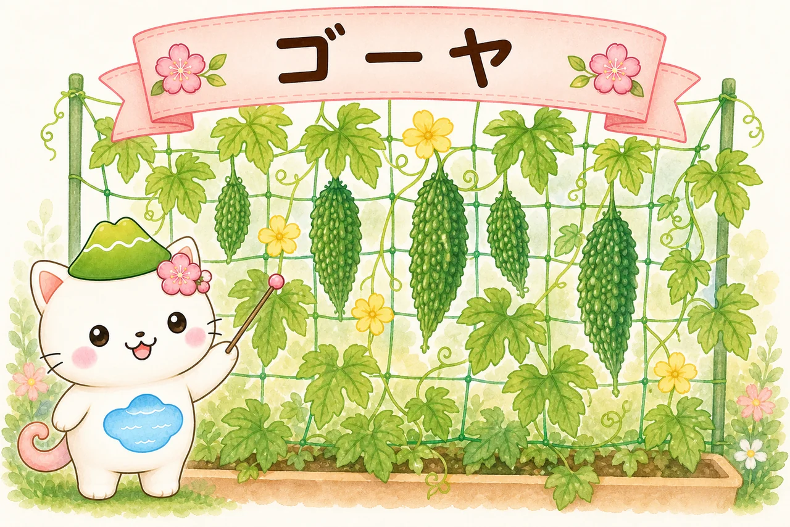
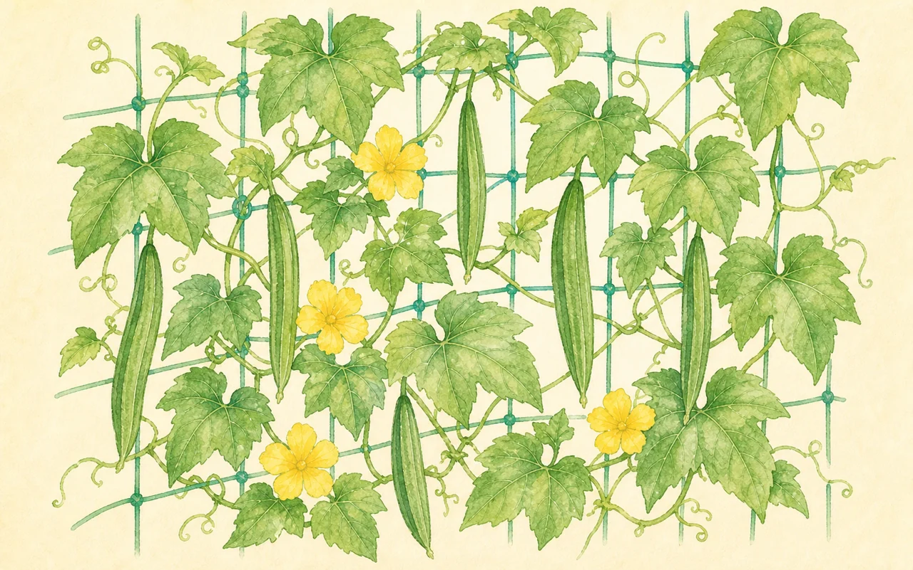
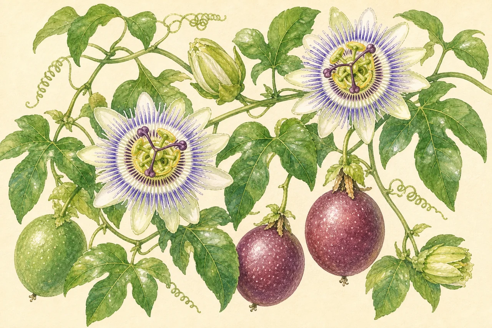
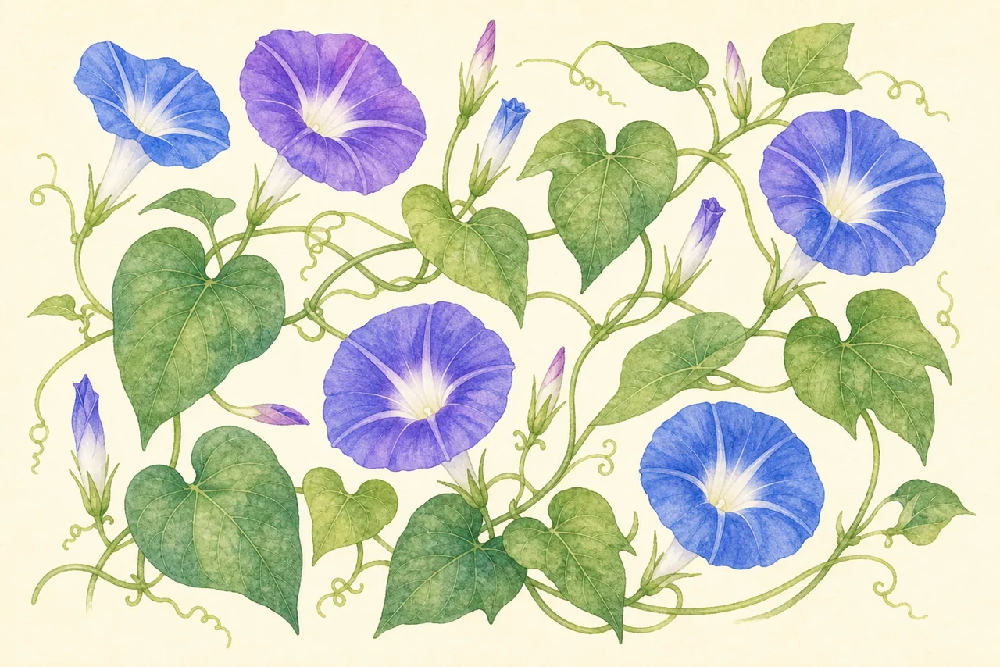
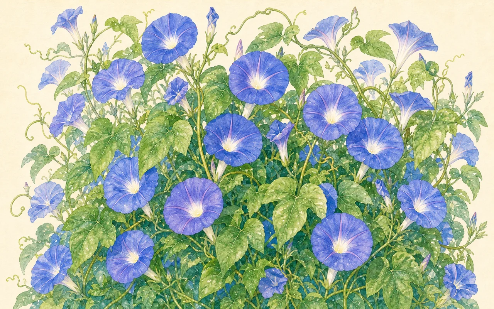
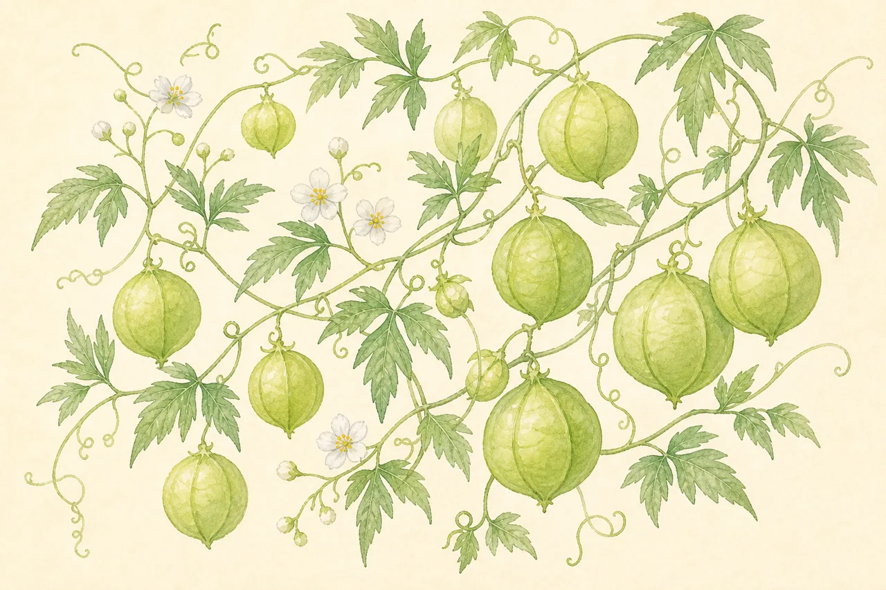

夏のグリーンカーテン・おすすめ植物8種
つる性の植物を窓辺のネットに這わせて作る「グリーンカーテン」。強い日差しをやわらげて、お部屋を自然に涼しくしてくれる夏のエコな日よけです。ここでは育てやすくカーテン向きの植物を8種えらび、それぞれの特徴と育て方を個別ページにまとめました。収穫も楽しめるものから、花がきれいなものまで、好みに合わせて選んでみましょう。

グリーンカーテンってなに？
グリーンカーテンは、ゴーヤやアサガオなどのつる性植物をネットに這わせて、窓やベランダをおおう「生きた日よけ」のこと。すだれやよしずと違って、見た目が涼やかなだけでなく、室温そのものを下げる効果があります。
- 日差しをさえぎる：葉のかげが直射日光をブロック。窓から入る熱エネルギーを大きくカットします。
- 葉からの蒸散（じょうさん）：葉が水分を蒸発させるとき、まわりの熱をうばって空気をひんやりさせます（打ち水と同じ仕組み）。
作り方の基本
どの植物もおおまかな流れは同じです。むずかしく考えず、まずはネットと大きめのプランターを用意するところから。
- ① ネットを張る：窓やベランダの外に、つる用ネットを支柱やフックでしっかり固定する。
- ② 大型プランター＋培養土：根がよく張れるよう、なるべく大きなプランターに。
- ③ 苗（または種）を植える：遅霜の心配がなくなった5月ごろが目安。
- ④ 摘心（てきしん）：本葉が5〜6枚になったら、つるの先を切る。わき芽（子づる）が増えて葉が密になる。
- ⑤ 誘引（ゆういん）：伸びたつるを麻ひもなどでネットに留め、すき間なく横へ広げる。
植物の選び方
- ゴーヤ・キュウリ・ヘチマ・四角豆：日よけをしながら夏野菜が穫れる。
- パッションフルーツ：個性的な花と南国果実の両取り。
- アサガオ・琉球アサガオ：涼しげな花が次々と咲く。
- フウセンカズラ：風船の実がかわいく、軽くて手軽。
おすすめの植物8種

ゴーヤ
遮光力 ★★★ ／ つるがよく茂る大定番。苦みのある実も穫れて、グリーンカーテン入門に最適。

キュウリ
遮光力 ★★☆ ／ 大きな葉で日をさえぎりつつ、とれたてを次々収穫。成長が早い夏の定番。

ヘチマ
遮光力 ★★★ ／ 5m以上に伸びる遮光力No.1。葉が大きく密に茂り、たわしや化粧水にも。

パッションフルーツ
遮光力 ★★☆ ／ 時計のような花と南国の果実が楽しめる。鉢植えで冬越しも可能。

四角豆（シカクマメ）
遮光力 ★★☆ ／ 切り口が星形になるユニークな莢と、涼しげな青い花。暑さに強い。

アサガオ
遮光力 ★★☆ ／ 種から育てやすい夏の花の定番。成長が早く、初心者の最初の一鉢に。

琉球アサガオ
遮光力 ★★★ ／ 非常に旺盛で10mにも伸びる宿根性。青い花が秋まで長く咲き続ける。

フウセンカズラ
遮光力 ★☆☆ ／ 風船のような実がかわいい、軽やかでやさしい日よけ。手軽に作れる。

どの植物も、葉がすき間なく茂ってこそ涼しいカーテンになるよ。コツは「摘心でわき芽を増やす」ことと「伸びたつるをこまめに横へ誘引する」こと。この2つだけ意識すれば、ふさふさのカーテンに近づくよ。